Planificación Temporal
Mikel Egaña Aranguren
Gestión de Proyectos (GP)
Planificación Temporal: Gantt, PERT, CPM, ROY, Precedencias
Mikel Egaña Aranguren (mikel.egana@ehu.eus)

Planificación Temporal
Ya sabemos:
- Qué tareas hay que realizar
- Cuánto tiempo necesitamos para cada tarea
- Quién va a realizar cada tarea
¿Cómo las distribuimos en el tiempo?
Diagrama de Gantt
- Cuadro bidimensional:
- Eje horizontal: tiempo
- Eje vertical: tareas
- Tarea: bloque rectangular (longitud = duración)
- Posición del bloque: inicio y fin de tarea
Diagrama de Gantt
- Sólo representa la elección del autor
- No refleja (ni justifica ni permite conocer):
- Orden óptimo de las actividades
- Plazo mínimo de ejecución del proyecto
- Efectos de retrasos
- Para ello se usan técnicas de planificación como PERT, CPM, ROY, Precedencias, ...
Técnicas de planificación: Objetivos
- Determinar qué tareas son necesarias y cuándo
- Buscar el plazo mínimo de ejecución del proyecto
- Buscar ligaduras temporales entre tareas
- Identificar las tareas críticas (Si se retrasan, afectan a todo el proyecto)
- Identificar el camino crítico (Formado por tareas críticas)
- Detectar holguras (Tiempo que puede retrasarse una tarea sin afectar al proyecto)
PERT (Program Evaluation and Review Techniques)
- Hay que ordenar las tareas:
- ¿Qué se puede hacer ahora?
- ¿Qué tiene que estar hecho ya?
- ¿Qué podría hacerse a la vez?
- ¿Qué debe ser lo siguiente?
PERT (Program Evaluation and Review Techniques)
- Actividades y Precedencias
- Grafo
- Duraciones
- EET y LET
- Holgura libre y total
- Camino crítico
PERT (Program Evaluation and Review Techniques)
- El resultado es un grafo donde:
- Los nodos representan momentos en el tiempo (sucesos)
- Los arcos representan tareas (Cada tarea aparece una única vez en el grafo)
- Sólo puede haber un arco (directo) entre dos nodos
Tipos de Precedencias
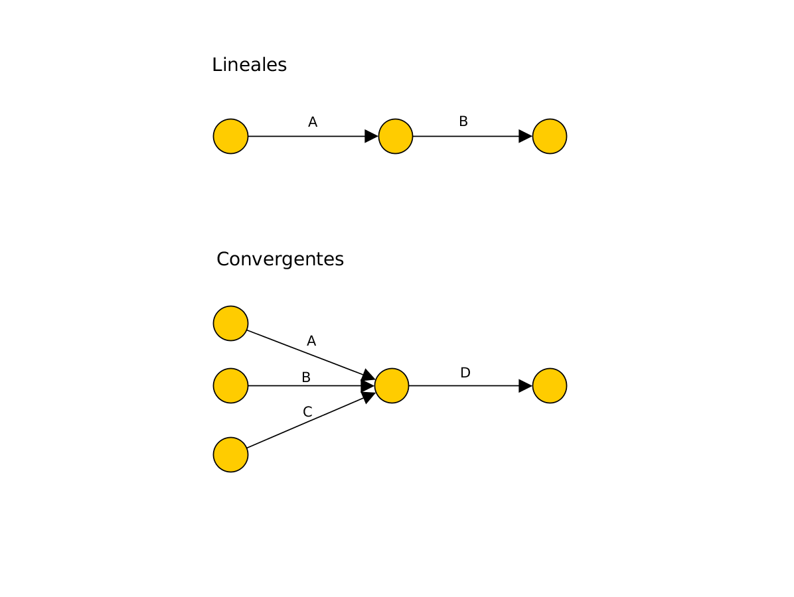
Recoger Precedencias
Matriz de encadenamientos: para comenzar la tarea de la fila, finalizar la de la columna
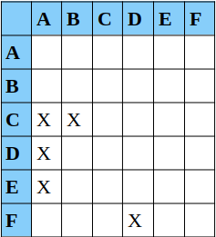
Recoger Precedencias
Cuadro de precedentes
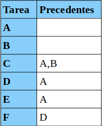
Actividades Ficticias
Actividades que no consumen tiempo ni recursos (Reflejan relaciones entre actividades)
Se usan cuando dos o más actividades tienen algunas precedentes comunes, pero no todas (A y B preceden a C, pero B sólo precede a D)
Tenemos a la vez relaciones lineales (B --> D) y convergentes (A,B --> C) o divergentes
Actividades Ficticias
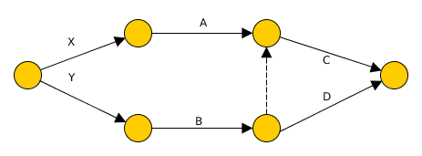
Actividades Ficticias
Se usan cuando entre dos sucesos se desarrollan varias actividades
Por ejemplo A, B, y C preceden a D (Tenemos actividades paralelas entre dos sucesos)
Actividades Ficticias
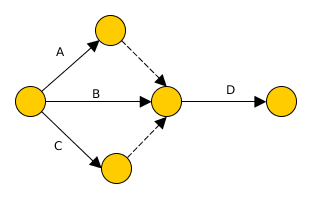
Planificación (PERT)
Calcular holgura total
Calcular holgura libre
Encontrar camino crítico
Planificación (PERT)
Asumimos un proyecto con las precedencias:
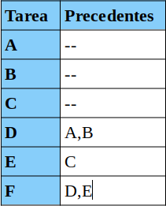
Planificación (PERT)
[Tarea] Construir grafo de dependencias
Planificación (PERT)
Grafo de dependencias
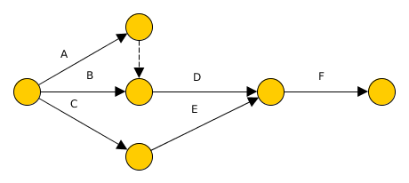
Planificación (PERT)
Numerar los nodos de izquierda a derecha y de arriba abajo
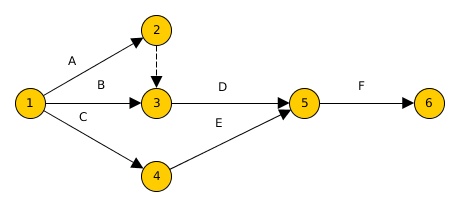
Planificación (PERT)
Calcular duración de cada actividad
\[ D = {E_O+4E_M+E_P \over 6} \]
- EO = Estimación optimista
- EM = Estimación más probable
- EP = Estimación pesimista
Planificación (PERT)
Añadir duración a cada actividad:
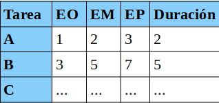
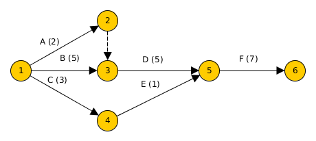
Planificación (PERT)
Para cada suceso, calcular:
- Earliest Event Time (EET): el tiempo más cercano al inicio en el que la tarea puede ejecutarse
- Latest Event Time (LET): el tiempo más cercano al final en el que la tarea puede ejecutarse sin demorar el proyecto
Planificación (PERT): EET
Para cada suceso, calcular:
- El EET del suceso inicial es 0
- Para el resto de sucesos:
- Para cada actividad que llega al suceso, sumar la duración de la actividad y el EET del suceso del que sale
- Si hay varios, seleccionar el mayor EET que se haya obtenido
Planificación (PERT): EET
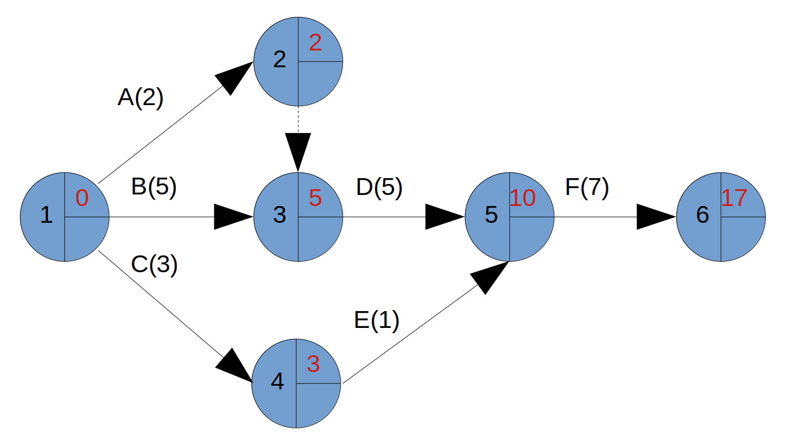
Planificación (PERT): LET
Para cada suceso, calcular:
- El LET del suceso final es igual a su EET
- Para el resto de sucesos:
- Para cada actividad que sale del suceso restar su duración al LET del suceso al que llegan
- Si hay varios, seleccionar el menor LET que se haya obtenido
Planificación (PERT): LET
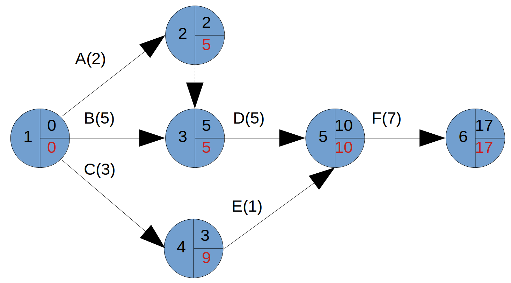
Planificación (PERT): Holgura Libre
Holgura libre de una tarea: Tiempo que resulta de restar al EET del suceso final la suma del EET del suceso inicial y la duración de esa tarea
\[ H_{ij}^L = EET_j - (EET_i + D_{ij}) \]
Indica el número de unidades de tiempo que puede retrasarse la realización de una tarea sin afectar a la fecha final del proyecto NI a la fecha de inicio de otras actividades
Planificación (PERT): Holgura Total
Holgura Total de una tarea: Tiempo que resulta de restar al LET del suceso final la suma del EET del suceso inicial y la duración de esa tarea
\[ H_{ij} = LET_j - (EET_i + D_{ij}) \]
Indica el número de unidades de tiempo que puede retrasarse la realización de una tarea sin afectar a la duración de un proyecto
Planificación (PERT): Cálculo Holguras
Si TODAS las actividades de salida del suceso N son ficticias, dicho suceso no se tendrá en cuenta
En su lugar se usarán los tiempos del nodo al que llegue la tarea ficticia. Si hubiera más de uno, se elegirá el nodo que haya impuesto el LET del suceso N
Aunque añadir tareas ficticias no es un error en sí mismo, esta práctica dificulta los cálculos a realizar y por tanto no está recomendada
Planificación (PERT): Camino Crítico
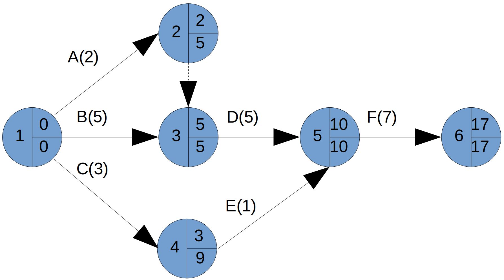
Planificación (PERT): Camino Crítico
Aquellas tareas con holgura total cero son tareas críticas
El camino que forman es el camino crítico
Planificación (PERT): Camino Crítico
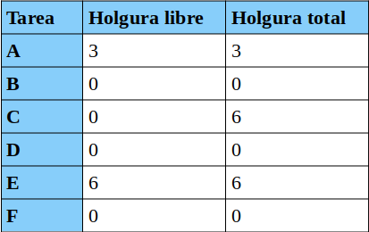
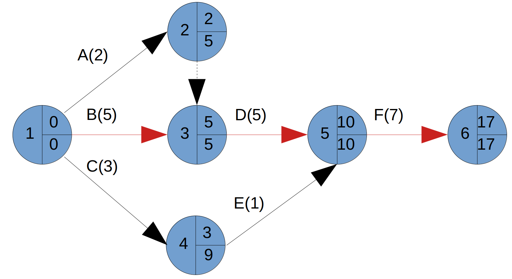
Planificación CPM
Los mismos fundamentos que PERT
CPM parte de un sólo tiempo como duración de actividad, mientras que PERT se basa en tres estimaciones
CPM es determinista y PERT probabilístico
Planificación Temporal: ROY
También se construye un grafo, pero:
- Los nodos son las actividades
- Los arcos representan las precedencias
Planificación Temporal (ROY): Tipos de Precedencias
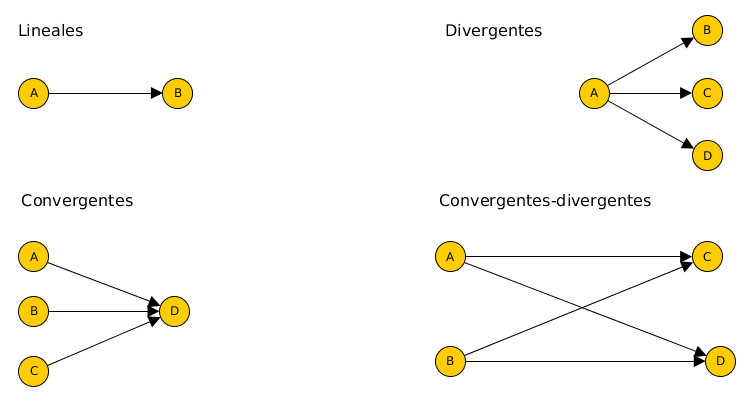
Planificación Temporal (ROY): Tipos de Precedencias
Para construir el grafo hay que incluir 2 actividades adicionales:
- Actividad de inicio
- Actividad de fin
Si sólo hay una actividad real que pueda ser la primera, no incluimos la de inicio. Si sólo hay una actividad real que pueda ser la última, no incluimos la de fin
Planificación Temporal (ROY): Tipos de Precedencias
ROY también usa la tabla de precedencias o la matriz de encadenamientos
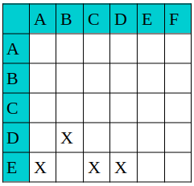
Planificación Temporal (ROY)
Cada nodo se representa mediante un cuadrado, donde:
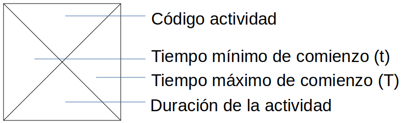
Planificación Temporal (ROY)
Sobre los arcos, la duración de la actividad de la que sale el arco (Puede incluir demora)
El tiempo mínimo de comienzo se calcula:
- Sumando para cada arco que llegue a la actividad, el tiempo mínimo de comienzo de la actividad de la que sale y el valor del arco
- Eligiendo el máximo de las sumas anteriores
Planificación Temporal (ROY)
El tiempo máximo de comienzo se calcula:
- Restando, para cada arco que sale de la actividad, su valor al tiempo máximo de comienzo de la actividad a la que llega
- Eligiendo el mínimo de las sumas anteriores
Planificación Temporal (ROY)
A,D,C preceden a E; B precede a D
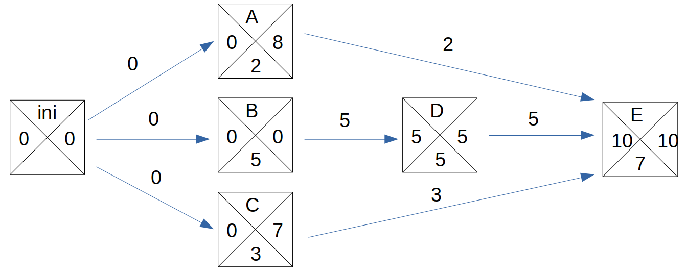
Planificación Temporal (ROY)
La holgura total de una tarea K es la diferencia entre sus tiempos máximo y mínimo:
\[ H_{k} = T_{k} - t_{k} \]
Planificación Temporal (ROY)
La holgura libre de una actividad K viene dada por la fórmula:
\[ H_{K}^L = min[t_{P} - t_{K} - D_{KP}]\forall P \]
Dónde P son las actividades que siguen a K y Dkp es el valor del arco que une las tareas K y P
Planificación Temporal: Precedencias
El grafo de actividades es como el ROY:
- Los nodos son las actividades
- Los arcos representan las precedencias de las tareas
Planificación Temporal: Precedencias
Permite cuatro tipos de precedencias:
- Fin - Comienzo (FC)
- Comienzo - Comienzo (CC)
- Fin - Fin (FF)
- Comienzo - Fin (CF)
Planificación Temporal: Precedencias
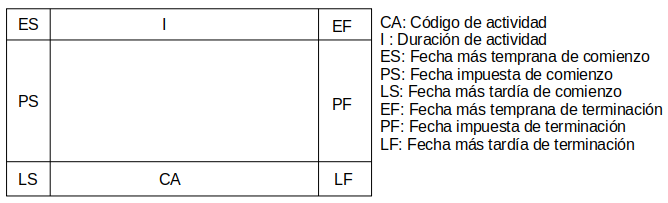
Planificación Temporal: Precedencias
Fin - Comienzo con demora D: B solo puede comenzar D unidades después de que haya finalizado A
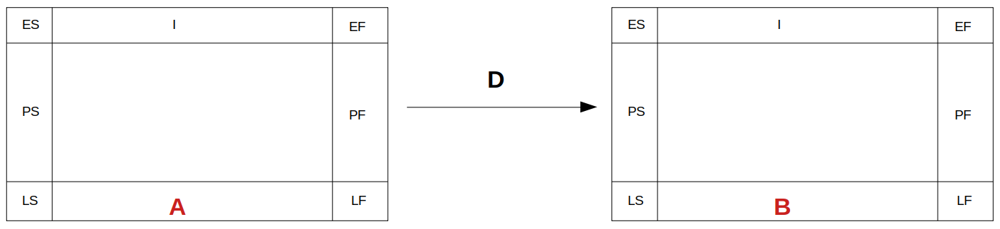
Planificación Temporal: Precedencias
Comienzo - Comienzo con demora D: B solo puede comenzar D unidades después de que haya comenzado A
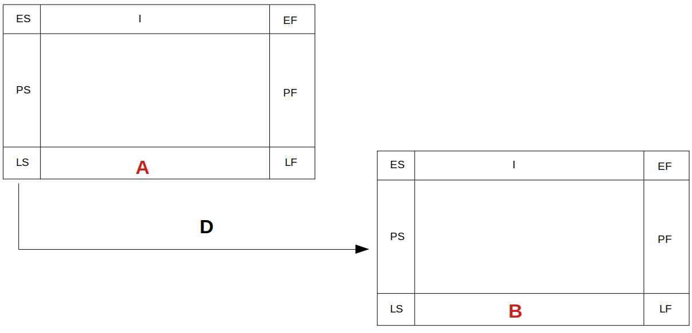
Planificación Temporal: Precedencias
Fin - Fin con demora D: B solo puede terminar D unidades después de haber terminado A
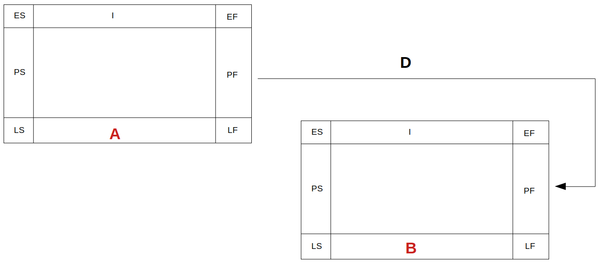
Planificación Temporal: Precedencias
Comienzo - Fin con demora D: B solo puede terminar D unidades después de haber comenzado A
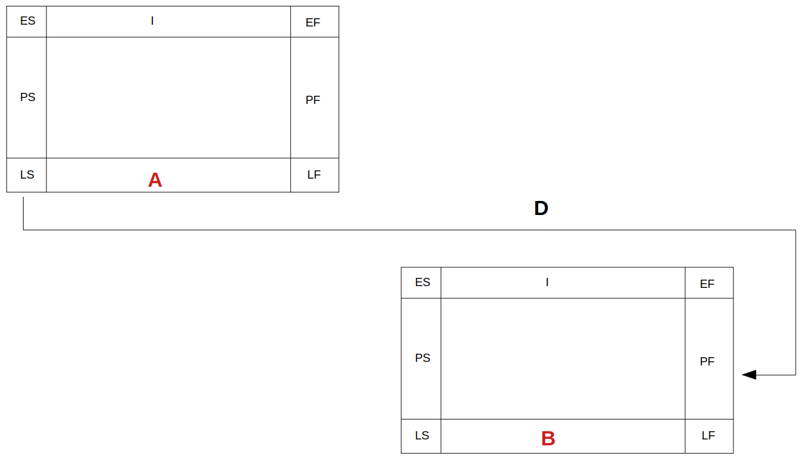
Planificación Temporal: Precedencias
Metodología:
- Se identifican las actividades iniciales
- Se completa el grafo siguiendo las relaciones que marcan la secuencia de ejecución de las actividades
- Si existen fechas planificadas o impuestas, se reflejan
- Se indican las demoras
Planificación Temporal: Precedencias
Primero calculamos ES y EF:
- Para tareas iniciales: ES=0, EF= su duración
- Para el resto (ej. tarea X): Mirar las tareas precedentes de X y las fechas impuestas de X. Por cada caso calcular un ES y EF (Siguiente transparencia)
- El par (ES, EF) mayor será el ES y el EF de la tarea X
Planificación Temporal: Precedencias
Cálculo de ES y EF de la tarea X:
- Precedencias CC (Tarea A): ES(X)_a=ES(A)+Da; EF(X)_a=ES(X)_a+Ix
- Precedencias FC (Tarea B): ES(X)_b=EF(B)+Db; EF(X)_b=ES(X)_b+Ix
- Precedencias CF (Tarea C): EF(X)_c=ES(C)+Dc; ES(X)_c=EF(X)_c-Ix
- Precedencias FF (Tarea D): EF(X)_d=ES(D)+Dd; ES(X)_d=EF(X)_d-Ix
- PS: ES(X)_ps=PS; EF(X)_ps=ES(X)_ps+Ix
- PF: EF(X)_pf=PF; ES(X_pf)=EF(X)_pf-Ix
Planificación Temporal: Precedencias
Cálculo de ES y EF de la tarea X:
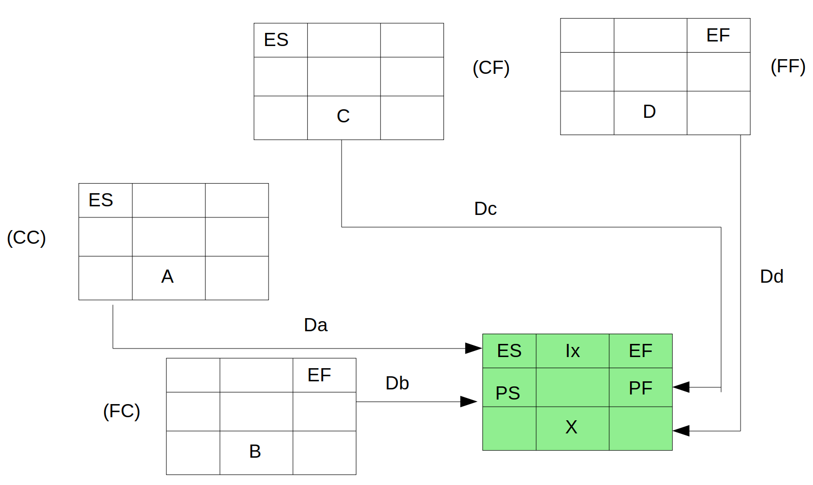
Planificación Temporal: Precedencias
Luego calcularemos LS y LF:
- Para las tareas finales:
- LF = EF mayor del diagrama
- LS = LF - duración de actividad
- Para el resto (ej. tarea X): mirar tareas siguientes de X y fechas impuestas de X. Por cada caso calcular un LS y LF
Planificación Temporal: Precedencias
Luego calcularemos LS y LF (cont.):
- El par (LS,LF) menor serán el LS y LF de X (Hay una excepción: Siempre debe cumplirse que ES<=LS y EF<=LF, pero a veces debido a las fechas impuestas no se cumplirá y debemos corregirlo, ejercicio 1)
Planificación Temporal: Precedencias
Cálculo de LS y LF de la tarea X:
- Precedencias CC (Tarea A): LS(X)_a=LS(A)-Da; LF(X)_a=LS(X)_a+Ix
- Precedencias FC (Tarea B): LF(X)_b=LS(B)-Db; LS(X)_b=LF(X)_b-Ix
- Precedencias CF (Tarea C): LS(X)_c=LF(C)-Dc; LF(X)_c=LS(X)_c+Ix
- Precedencias FF (Tarea D): LF(X)_d=LF(D)-Dd; LS(X)_d=LF(X)_d-Ix
- PS: LS(X)_ps=PS; LF(X)_ps=LS(X)_ps+Ix
- PF: LF(X)_pf=PF; LS(X)_pf=EF(X)_pf-Ix
Planificación Temporal: Precedencias
Cálculo de LS y LF de la tarea X:
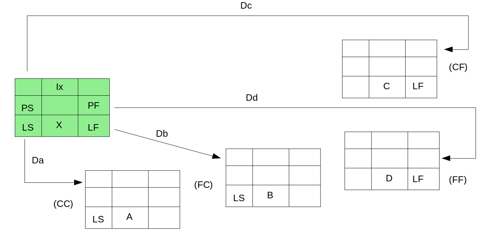
Planificación Temporal: Precedencias
Cálculo de holgura de tareas:
- Holgura total de la tarea K:
\[ H_{K}^T = LF_{K} - EF_{K} \]
Planificación Temporal: Precedencias
Cálculo de holgura de tareas:
- La holgura libre de una tarea cualquiera se fija obteniendo el mínimo del resultado de calcular:
- ES (siguiente) - (EF + D), si relación FC
- ES (siguiente) - (ES + D), si relación CC
- ES (siguiente) - (EF + D), si relación FF
- ES (siguiente) - (ES + D), si relación CF